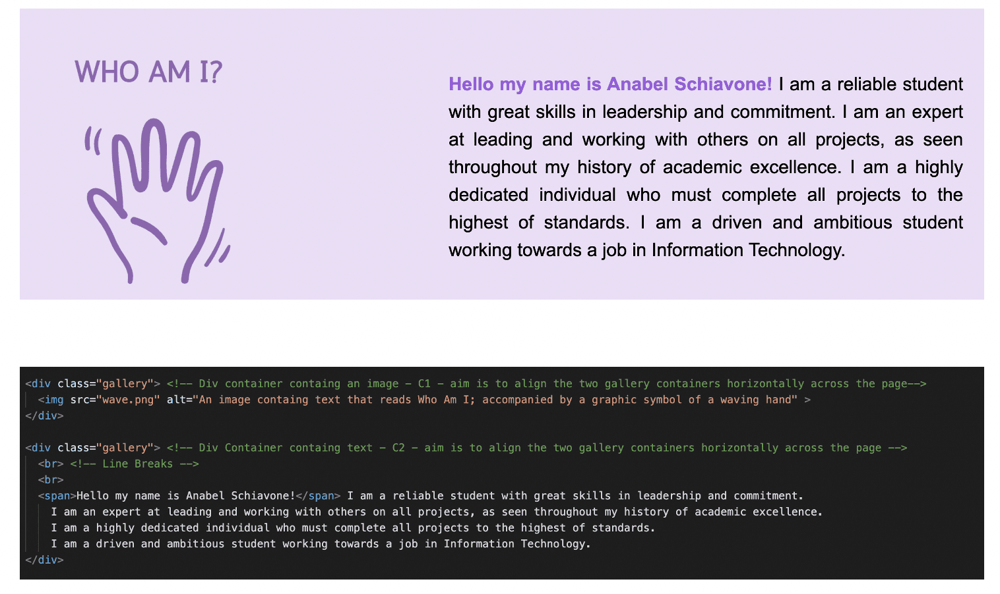
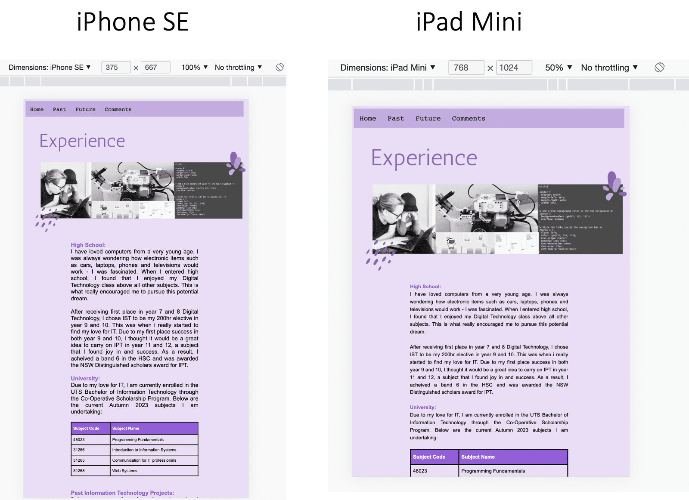
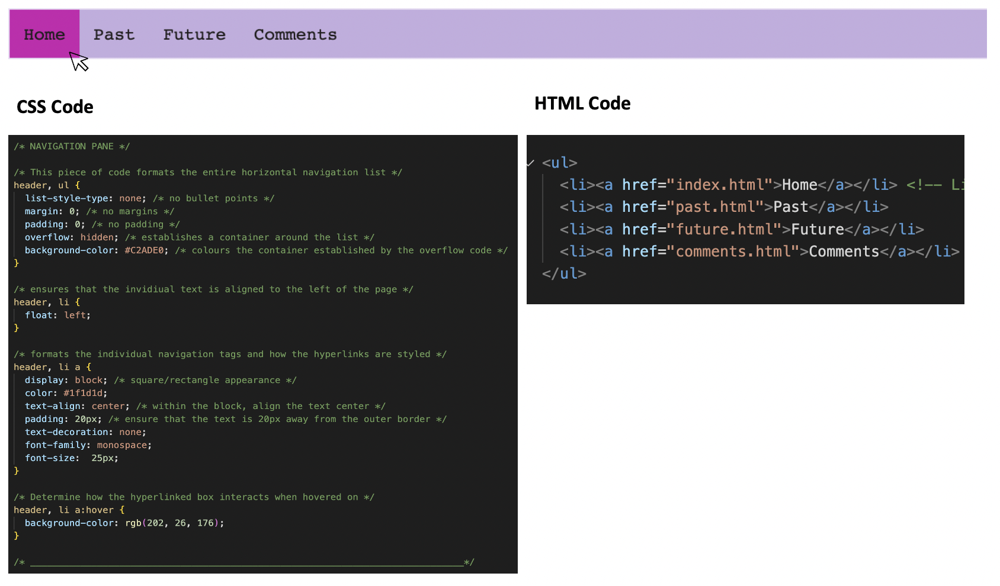
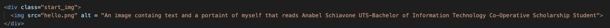

User experience and interaction are imperative in ensuring a website is successfully designed, implemented and received. This comments page details the technical, aesthetic and accessibility considerations that were considered throughout the development of this website.
I have confidence that my website displays the importance of how simple and consistent technical and aesthetic design can create an efficient and seamless experience for the user.
Technical Considerations
Overall Structure:
As per the UTS submission guidelines, this website contains four .html pages and one external .css style page.
Webpage Structure:
HTML allows users to create and structure sections, headings, links and paragraphs. Being text-based, HTML determines how the browser will display the page elements including text, images and other multimodal formats. The webpage utilises the heading tag to create heading text.
Within HTML, heading tags instruct the browser to present the text as bolder and larger compared to a typical paragraph. By distinguishing the two text types, the user experience is improved as viewers can glance at the heading of the page and as a result, immediately understands the page contents.
Directly underneath the heading, I utilised a div tag which contains paragraphs of information. The div tag defines a division/section in an HTML document, essentially acting as a container for other HTML elements. To differentiate this first div tag from other elements I utilised different class tag of so I could specifically reference this portion of content in the external webpage.css stylesheet. By establishing a unique class, I was able to alter the default HTML formatting, which will be discussed in the Aesthetics Section.
More specifically, within the "Home Page" I utilised one div element named "gallery" to create a horizontal gallery-like display of an image and text. This div allowed me to display an image to the left of the text.

Navigation Path:
I created a horizontal navigation pane with no navigation path restrictions. An unordered list structure with formatting (discussed in the Aesthetics section) allowed the list text to be aligned horizontally. To ensure the navigation bar worked as expected, I utilised the "ahref" tag which would make the text hyperlinked to the desired page locations.
Browser/Device Compatibility
To ensure that the technical elements of the website could be viewed by all, I tested the website on multiple browsers. As expected, Safari and Google Chrome produced similar results which reaffirmed that the tags I have used can be translated and understood across browsers.
I also capitalised on the inspect tool featured in Google Chrome. Whilst in the design and prototype phase of this task, I viewed the .html source code through the browser on my laptop. However, it is important for a website designer to ensure that each page presents as expected on different devices. The inspect tool allowed me to view the pages on different devices ranging from an iPhone SE, iPad Mini and more. This allowed me to alter some initial formatting issues, ensuring the site remains consistent among all device types.

Aesthetic Considerations
User Experience:
For a website to be successfully received by the viewing audience, it is important to always consider the user experience and their interaction with each page. In regard to user experience, I wanted to ensure my page was simple and consistent in terms of navigation and design.
I decided to integrate a horizontal navigation pane to display the different web pages that were contained within the website. Utilising CSS code I ensured that the linked pages remained a key focus throughout the entire site. This was achieved by utilising a light purple colour that captures the user’s attention without being overwhelming for the senses. Upon hover, the background colour of the individual link turns to a deeper pink/purple colour reassuring the user that they are interacting with a hyperlinked element which eliminates any sense of navigation path confusion.

Whilst in the design phase, I created a storyboard outlining each element's overall design structure within the website. With user experience in mind, I decided to feature a consistent structure.
Readability:
Readability is the ease with which a reader can understand a written text. Readability depends on a text's presentation, such as font choice, spacing, alignment and colouring. Throughout the entire page, I integrated a sans-serif Verdana font which is praised for its readability and clarity. I then formatted the line height throughout the entire website to be 1.5 em. By altering the default formatting, I was able to create more space between each sentence line, improving readability and clarity.
Regarding paragraph formatting, the text is aligned as justified with a padding margin of 200px. The HTML standard of text alignment is presented to the left of the page; in terms of aestehtic presentation the paragraph text is formatted to have a straight left edge and an uneven right edge. In comparison, justified text ensures that the sentence lengths remain consistent, where the left and right edges of the paragraph are staright; in terms of presentation justified text contibutes to a cleaner and formal page appearance. The text padding of 200px is imperative in establishing white space within the page. White space allows text to be easily scannable and significantly improves legibility, as the user's senses are not overwhelmed by copious amoutns of content compressed into one section of the page.
Accessibility Considerations
As highlighted before, user experience is a priority. Accessibility in terms of web development ensures that all people with varying abilities are able to access the contents of the web, free from any discriminatory factors. It is essential that the Web is accessible in order to provide equal access and equal opportunity to people with diverse abilities. The below design principles that I have implemented within the website has been sourced from the Web Content Accessibility Guidelines (WCAG). WCAG is a framework that complies with international accessibility standards to ensure all web developers create webpages that can be accessed and used by all.
Accessibility information can be found using this webpage:
Perceivable User Interface:
Text Alternatives have been used to convey the purpose of non-text elements such as images. For example, text alternatives can be read aloud for visually impaired individuals so they can understand the non-text content of the page.

Operable User Interface:
The content within my page does not cause seizures or physical reactions. I have actively omitted the use of flashing content to ensure all viewers are comfortable and will not experience any adverse effects from the viewing of my website.
Understandable User Interface:
My content and webpage structure appears in a predictable way through the use of a navigation pane, headings and paragraph text.
Robust Content:
Correct and internationally accepted HTML/CSS Markup has been used so that the page is displayed in the intended manner free from error; this has been achieved by ensuring that the website presents as expected on all device and browser versions.
I have confidence that my website displays the importance of how simple and consistent technical and aesthetic design can create an efficient and seamless experience for the user.
Technical Considerations
Overall Structure: As per the UTS submission guidelines, this website contains four .html pages and one external .css style page.Webpage Structure: HTML allows users to create and structure sections, headings, links and paragraphs. Being text-based, HTML determines how the browser will display the page elements including text, images and other multimodal formats. The webpage utilises the heading tag to create heading text.
Within HTML, heading tags instruct the browser to present the text as bolder and larger compared to a typical paragraph. By distinguishing the two text types, the user experience is improved as viewers can glance at the heading of the page and as a result, immediately understands the page contents.
Directly underneath the heading, I utilised a div tag which contains paragraphs of information. The div tag defines a division/section in an HTML document, essentially acting as a container for other HTML elements. To differentiate this first div tag from other elements I utilised different class tag of so I could specifically reference this portion of content in the external webpage.css stylesheet. By establishing a unique class, I was able to alter the default HTML formatting, which will be discussed in the Aesthetics Section.
More specifically, within the "Home Page" I utilised one div element named "gallery" to create a horizontal gallery-like display of an image and text. This div allowed me to display an image to the left of the text.
Navigation Path: I created a horizontal navigation pane with no navigation path restrictions. An unordered list structure with formatting (discussed in the Aesthetics section) allowed the list text to be aligned horizontally. To ensure the navigation bar worked as expected, I utilised the "ahref" tag which would make the text hyperlinked to the desired page locations.
Browser/Device Compatibility To ensure that the technical elements of the website could be viewed by all, I tested the website on multiple browsers. As expected, Safari and Google Chrome produced similar results which reaffirmed that the tags I have used can be translated and understood across browsers.
I also capitalised on the inspect tool featured in Google Chrome. Whilst in the design and prototype phase of this task, I viewed the .html source code through the browser on my laptop. However, it is important for a website designer to ensure that each page presents as expected on different devices. The inspect tool allowed me to view the pages on different devices ranging from an iPhone SE, iPad Mini and more. This allowed me to alter some initial formatting issues, ensuring the site remains consistent among all device types.
Aesthetic Considerations
User Experience: For a website to be successfully received by the viewing audience, it is important to always consider the user experience and their interaction with each page. In regard to user experience, I wanted to ensure my page was simple and consistent in terms of navigation and design.I decided to integrate a horizontal navigation pane to display the different web pages that were contained within the website. Utilising CSS code I ensured that the linked pages remained a key focus throughout the entire site. This was achieved by utilising a light purple colour that captures the user’s attention without being overwhelming for the senses. Upon hover, the background colour of the individual link turns to a deeper pink/purple colour reassuring the user that they are interacting with a hyperlinked element which eliminates any sense of navigation path confusion.
Whilst in the design phase, I created a storyboard outlining each element's overall design structure within the website. With user experience in mind, I decided to feature a consistent structure.
Readability: Readability is the ease with which a reader can understand a written text. Readability depends on a text's presentation, such as font choice, spacing, alignment and colouring. Throughout the entire page, I integrated a sans-serif Verdana font which is praised for its readability and clarity. I then formatted the line height throughout the entire website to be 1.5 em. By altering the default formatting, I was able to create more space between each sentence line, improving readability and clarity.
Regarding paragraph formatting, the text is aligned as justified with a padding margin of 200px. The HTML standard of text alignment is presented to the left of the page; in terms of aestehtic presentation the paragraph text is formatted to have a straight left edge and an uneven right edge. In comparison, justified text ensures that the sentence lengths remain consistent, where the left and right edges of the paragraph are staright; in terms of presentation justified text contibutes to a cleaner and formal page appearance. The text padding of 200px is imperative in establishing white space within the page. White space allows text to be easily scannable and significantly improves legibility, as the user's senses are not overwhelmed by copious amoutns of content compressed into one section of the page.
Accessibility Considerations
As highlighted before, user experience is a priority. Accessibility in terms of web development ensures that all people with varying abilities are able to access the contents of the web, free from any discriminatory factors. It is essential that the Web is accessible in order to provide equal access and equal opportunity to people with diverse abilities. The below design principles that I have implemented within the website has been sourced from the Web Content Accessibility Guidelines (WCAG). WCAG is a framework that complies with international accessibility standards to ensure all web developers create webpages that can be accessed and used by all. Accessibility information can be found using this webpage:Accessibility Guidelines
Perceivable User Interface: Text Alternatives have been used to convey the purpose of non-text elements such as images. For example, text alternatives can be read aloud for visually impaired individuals so they can understand the non-text content of the page.
Operable User Interface: The content within my page does not cause seizures or physical reactions. I have actively omitted the use of flashing content to ensure all viewers are comfortable and will not experience any adverse effects from the viewing of my website.
Understandable User Interface: My content and webpage structure appears in a predictable way through the use of a navigation pane, headings and paragraph text.
Robust Content: Correct and internationally accepted HTML/CSS Markup has been used so that the page is displayed in the intended manner free from error; this has been achieved by ensuring that the website presents as expected on all device and browser versions.